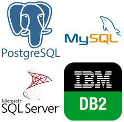

Anotações de Aula 3 INFRAESTRUTURA DE TIC
3.2 Componentes da Infraestrutura de TIC
Em uma empresa, a infraestrutura de TIC precisa de 3 elemntso fundamentais para funcionar:
Hardware;
Software;
Rede;
(Bancos de) Dados;
Pessoas especializadas;
3.2.1 Hardware
Fazem parte do cabedal de hadware das empresas:
Estações de Trabalho (WorkStations) - É um computador direcionado a atividades profissionais que, frequentemente, demandam bastante desempenho no processamento de dados;
Computadores Pessoais (Laptops e Desktops) - Um Computador Pessoal empresarial é um computador de mesa com capacidade dimensionada para uso em empresas e organizações visando tratar tarefas administrativas dos departamentos. O mesmo se aplica aos computadores portáteis empresariais (laptops);
Dispositivos móveis (Smartphones e Tablets) - Os smartphones e tablets empresarias são aparelho celular fornecido por uma empresa para que os colaboradores usem no trabalho, normalmente customizados com configurações avançadas, como e-mail corporativo, aplicativos de gestão de projetos e CRM (Sistema de Relacionamento com Clientes) ;
3.2.2 Redes de Computadores
- Roteadores: Direcionam o tráfego de dados entre redes. Operam em camada de rede OSI “3”. Podem ser roteadores internos à empresa (Roteadores Internos ao Sistema Autônomo de Roteamento) ou roteadores de borda (Roteadores Externos ao Sistema Autônomo de Roteamento).


- Switches: Conectam dispositivos dentro de uma rede local da empresa (LAN - Local Area Network). camada de rede OSI “2”

- Firewalls: Protegem a rede contra acessos não autorizados e ameaças externas.

Pontos de Acesso Wi-Fi: Permitem a conexão sem fio à rede. camada de rede OSI “2”
Os pontos de acesso de rede sem fio (WI-FI) formam uma grande célula wi-fi na empresa. A célula, tal qual um siwitch virtual, tem apenas a função de conectar os dispositivos, geralmente os dispositivos móveis, a rede local da empresa (LAN - Local Area Network).

- Cabos e Conectores: A infraestrutura física para conectar os dispositivos. camada de rede OSI “1”
3.2.3 Software
- Sistemas Operacionais: Software fundamental que gerencia o hardware e os recursos do sistema (ex: Windows Server, Linux, macOS, Windows).

- Aplicações Empresariais: Softwares utilizados para as atividades de negócio (ex: ERP, CRM, sistemas de gestão de RH, sistemas de contabilidade).

- Software de Produtividade: Ferramentas para criação de documentos, planilhas, apresentações, e-mail (ex: Microsoft Office, Google Workspace).

- Software de Segurança: Antivírus, anti-malware, sistemas de detecção de intrusão (IDS), sistemas de prevenção de intrusão (IPS).

- Software de Gerenciamento de Rede: Ferramentas para monitorar e gerenciar a infraestrutura de rede.

- Bancos de Dados: Sistemas para armazenar e gerenciar grandes volumes de dados de forma organizada (ex: SQL Server, Oracle, MySQL).
Bancos de Dados Relacionais

Bancos de Dados Não-Relacionais
Bancos de Dados Grafos
Bancos de Dados Hierarquicos
Middleware: Software que permite a comunicação e a troca de dados entre diferentes aplicações.
Software de Virtualização: Permite executar múltiplos sistemas operacionais e aplicações em um único servidor físico.
Sistemas de Backup e Recuperação: Software para automatizar e gerenciar os processos de backup e restauração de dados.
3.2.3.1 Serviços de TIC
| Tipo de Serviço Corporativo | Descrição | Softwares servidores do serviço |
|---|---|---|
| Correio eletrônico - E-Mail | Método de comunicação digital que permite o envio e recebimento de mensagens através da internet; |
|
| Compartilhamento de Arquivos | Permite aos usuários armazenar, acessar e distribuir arquivos digitais pela internet; |
|
| Compartilhamento de Impressoras | Permite que vários computadores em uma rede corporativa utilizem uma única impressora; |
|
| Serviço de Nomes de Domínio - DNS | É essencialmente a “lista telefônica” da internet. Ele traduz nomes de domínio amigáveis (como “google.com”) em endereços IP numéricos (como “172.217.160.142”), que os computadores usam para se comunicar entre si. |
|
| Gerenciamento de usuários da rede corporativa | Um serviço de gerenciamento de usuários de rede corporativa, também conhecido como domínio, é um sistema centralizado que permite aos administradores de TI controlar e gerenciar o acesso de usuários e recursos em uma rede corporativa; |
|
3.4 Exercícios de Fixação
3.4.1 Hardware - Inventário
Exercício 1 - Você precisa levantar o montante de capital para comprar equipamentos que vão informatizar a empresa com o seguinte layout.
A empresa tem 9 departamentos: Presidência com 3 funcionários, diretoria com 9 funcionários, departamento de TI 5 funcionários, departamento jurídico com 1 funcionário ,departamento de contabilidade com 5 funcionários, departamento de Recursos Humanos 3 funcionários, Departamento de Vendas 10 funcionários, Departamento de compras com 5 funcionários, Loja física com 10 funcionários e departamento de recursos materiais 5 funcionários. Com exceção dos funcionários da loja física, todos os funcionários usam um computador de mesa, uma mesa, um monitor 21 polegadas, uma cadeira e 1 telefone IP.
Baseado nestas informações, monte a distribuição de funcionários e equipamentos:
| Departamento | Funcionários | ComputadoresdeMesa | Mesas | Monitores21” | Cadeiras | TelefonesIP |
|---|---|---|---|---|---|---|
| Presidência | 3 | 3 | 3 | 3 | 3 | 3 |
| Diretoria | 9 | 9 | 9 | 9 | 9 | 9 |
| DepartamentodeTI | 5 | 5 | 5 | 5 | 5 | 5 |
| DepartamentoJurídico | 1 | 1 | 1 | 1 | 1 | 1 |
| DepartamentodeContabilidade | 5 | 5 | 5 | 5 | 5 | 5 |
| DepartamentodeRH | 3 | 3 | 3 | 3 | 3 | 3 |
| DepartamentodeVendas | 10 | 10 | 10 | 10 | 10 | 10 |
| DepartamentodeCompras | 5 | 5 | 5 | 5 | 5 | 5 |
| LojaFísica | 10 | 0 | 0 | 0 | 0 | 0 |
| DepartamentodeRecursosMateriais | 5 | 5 | 5 | 5 | 5 | 5 |
| Total | 56 | 51 | 51 | 51 | 51 | 51 |
Os equipamentos serão adquiridos em leilão. O melhor preço encontrado para cada item foi o seguinte:
Computador de mesa : R$ 4.289,00
Monitores 21’ : R$ 422,92
Mesas : R$ 195,00
Cadeiras : R$ 24,51
Telefones IP : R$ 589,34
Calcule:
Qual o INVESTIMENTO de cada departamento com cada equipamento ?
Qual o INVESTIMENTO da empresa com cada classe de equipamento ?
| Departamento | Computadores | Monitores | Mesas | Cadeiras | TelefonesIP |
|---|---|---|---|---|---|
| Presidência | R$ 12.867,00 | R$ 1.268,76 | R$ 585,00 | R$ 73,53 | R$ 1.768,02 |
| Diretoria | R$ 38.601,00 | R$ 3.806,28 | R$ 1.755,00 | R$ 220,59 | R$ 5.304,06 |
| DepartamentodeTI | R$ 21.445,00 | R$ 2.114,60 | R$ 975,00 | R$ 122,55 | R$ 2.946,70 |
| DepartamentoJurídico | R$ 4.289,00 | R$ 422,92 | R$ 195,00 | R$ 24,51 | R$ 589,34 |
| DepartamentodeContabilidade | R$ 21.445,00 | R$ 2.114,60 | R$ 975,00 | R$ 122,55 | R$ 2.946,70 |
| DepartamentodeRH | R$ 12.867,00 | R$ 1.268,76 | R$ 585,00 | R$ 73,53 | R$ 1.768,02 |
| DepartamentodeVendas | R$ 42.890,00 | R$ 4.229,20 | R$ 1.950,00 | R$ 245,10 | R$ 5.893,40 |
| DepartamentodeCompras | R$ 21.445,00 | R$ 2.114,60 | R$ 975,00 | R$ 122,55 | R$ 2.946,70 |
| LojaFísica | R$ 0,00 | R$ 0,00 | R$ 0,00 | R$ 0,00 | R$ 0,00 |
| DepartamentodeRecursosMateriais | R$ 21.445,00 | R$ 2.114,60 | R$ 975,00 | R$ 122,55 | R$ 2.946,70 |
| TotalGeral | R$ 218.739,00 | R$ 21.146,00 | R$ 9.750,00 | R$ 1.225,50 | R$ 29.467,00 |
Qual o INVESTIMENTO de cada departamento com TIC ?
Qual o INVESTIMENTO necessário em TIC para informatizar a empresa ?
| Departamento | Custo total TIC Por departamento R$ | Custo total de TIC da empresa R$ |
|---|---|---|
| Presidência | R$ 16.562,31 | R$ 280.328,50 |
| Diretoria | R$ 49.686,93 | |
| Departamentode TI | R$ 27.603,85 | |
| Departamento Jurídico | R$ 5.520,77 | |
| Departamentode Contabilidade | R$ 27.603,85 | |
| Departamentode RH | R$ 16.562,31 | |
| Departamentode Vendas | R$ 55.207,70 | |
| Departamentode Compras | R$ 27.603,85 | |
| Loja Física | R$ 0,00 | |
| Departamento de Recursos Materiais | R$ 27.603,85 |